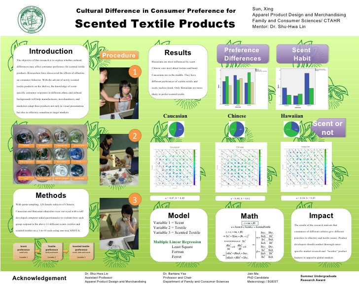

Consumer Studies


More studies to be added ⋅⋅⋅
Social Studies


More studies to be added ⋅⋅⋅
More studies to be added ⋅⋅⋅
More studies to be added ⋅⋅⋅
2008
12 scarves
with or without scent
scored 1-10 by 120 adults
Tactile
Olfactory
Visual preferences
120 female consumers
3 ethnic groups:
Caucasians
Hawaiians
Chinese
Fortran
(by a science student)
Multilinear Regression
ANOVA
When scented textiles became technologically viable, we wanted to see if scent is a marketable product attribute. How would consumers respond to scent? Would they respond to it differently depending on whether they grew up with scent? At the time, I spent a few years in Hawaii and I noticed the tropical floral scents were commonly used as body scent by the locals. As a Chinese, I didn’t have much scent consumption in the past. Funded by Summer Undergraduate Research Award, I designed the experiment and collected data from 120 individuals aged from 20 to 40, from three ethnic groups, all women.
Consumers of different cultures indeed weigh olfactory and tactile senses differently. Hawaiians are most influenced by scent. Chinese care most about texture and touch. Caucasians are in the middle and more responsive to visuals. Only Hawaiians are more likely to choose a scented textile over unscented. Marketers need to conduct thorough sense-specific research and “localize” product features to appeal to specific markets.
12 scents: rose, honeysuckle, sandalwood, gardenia, lemongrass, lavender, YSL, musk, plumeria, white ginger, cinnamon, green tea. 12 polyester scarfs in varied colors, patterns, textures. One set of scarves are unscented. The second set scarves are scented and put in glass jars with sealed lids.
Steps
⦿ Test 1: Smell the aroma in each of the scented scarves jar.
⦿ Test 2: Look and touch the unscented scarves and score them.
⦿ Test 3: Look, touch and smell the scented scarves and score them.
⦿ Preference: scent or no scent.
Below is the presentation poster from the UHM Symposium.
